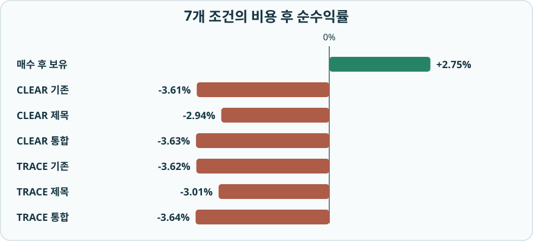
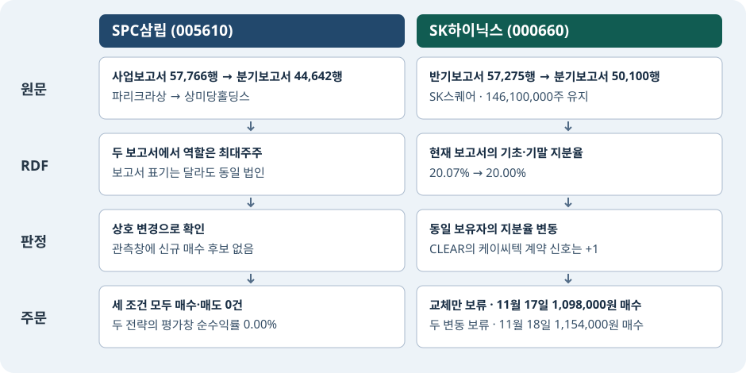

지배권 공시와 공급계약 반응 학습을 활용한 매매 실험
초록. 공급계약 공시가 매수·매도 판단에 도움이 되는지 평가하기 위해 공시 반응 학습 CLEAR를 제안한다. 공급계약 그래프에서 공시 기업(0홉)과 직접 구매자(1홉)를 찾고, 유사 공시의 비용 후 수익률로 신호를 학습한다. 10~11월 172종목 평가에서 CLEAR의 순수익률은 −7.39%로 가격 추세보다 0.20%p 높았다. 삼성전기에서는 0홉 신호가 매도를 앞당겼고, 1홉을 추가해 달라진 체결은 없었다. 별도 지배권 실험에서는 원문으로 확인한 최대주주 교체와 신규 매수가 겹치지 않았다.
1. 서론
앞선 CLEAR·TRACE 연구는 계약 당사자와 유효 기간을 확인해 공급계약 공시를 주문에 반영했다 [1]. 이 연구에서는 공시를 낸 기업과 직접 구매자의 반응을 과거 데이터에서 학습하면 가격 추세만으로 결정한 주문이 어떻게 달라지는지 살핀다.
이를 위해 공시 반응 학습 CLEAR를 제안하고, 같은 시세와 비용으로 가격 추세 및 매수 후 보유와 비교한다. 직접 구매자 경로를 추가했을 때 체결이 달라지는지도 확인한다. 지배권 공시에 대해서는 별도의 사전 분석 [2]을 바탕으로 공시 제목과 원문 근거가 서로 다른 매수 판단으로 이어지는지 검토한다.
2. 관련 연구
2.1 공급계약 공시와 주가 반응
우민철과 박수철 [3]은 국내 단일판매·공급계약 공시 6,072건을 분석하였다. 공시 당일에는 유의한 주가 상승이 나타났지만, 공시 다음 날에는 초과수익률의 반전이 관찰되었다. 공시 직후의 반응과 투자자가 그 정보를 확인한 뒤 얻을 수 있는 수익을 따로 살펴야 하는 이유다. CLEAR는 최초 계약과 정정 공시를 유형별로 나누고 공급사 매출 대비 계약 규모를 함께 사용한다. 신규 계약이라는 사실만으로 신호의 방향을 정하지 않고, 유사한 공시가 있었을 때의 수익률로 방향과 크기를 추정한다.
사건연구는 특정 사건 전후의 실제 수익률에서 정상 수익률을 뺀 값을 이용해 시장 반응을 측정한다 [6]. 본 연구의 성과 지표는 공시를 사용할 수 있는 거래일의 시가부터 비용을 반영해 계산한 전략 수익률이다. 학습에는 5거래일 수익률을 쓰고, 백테스트에서는 날마다 보유 상태를 다시 결정한다. 이 설계로 확인할 수 있는 것은 동일한 시세와 비용에서 공시 신호가 주문과 손익을 얼마나 바꾸었는지다.
2.2 공급사와 고객 사이의 정보 전달
Cohen과 Frazzini [4]는 주요 고객 공시로 기업 간 연결을 식별하고, 고객사의 주가 움직임이 연결된 공급사의 후속 수익률을 예측하는 데 도움이 되는지 살폈다. 이 연구는 경제적 관계가 정보의 전달 경로가 될 수 있다는 근거를 제공한다. CLEAR가 살피는 방향은 공급사의 계약 공시에서 직접 구매자로 이어진다. 따라서 선행 연구의 결과를 그대로 적용할 수 없으며, 구매자 후보를 추가했을 때 실제 주문이 바뀌는지 이번 표본에서 별도로 확인한다. 새 공시에 구매자가 명시되고 같은 제품군의 기존 계약이 당시 유효할 때만 1홉 후보로 인정하는 것도 이 때문이다.
2.3 시점별 지식그래프와 공시 근거
Ding 등 [5]의 TRACE는 과거 금융 그래프에서 관계 경로를 채굴하고, 예측 시점에 접근할 수 있는 관계와 문서로 탐색을 제한한다. 채굴한 경로는 다음 거래일의 상승·하락을 예측하는 데 쓰인다. CLEAR는 공급계약으로 0홉과 1홉 후보를 정한 뒤, 공시 유형과 계약 규모에 따른 비용 후 수익률을 학습한다. 두 방법 모두 당시 이용 가능한 근거를 중시하며, 그래프에서 탐색하는 범위와 학습 목표가 다르다.
공시 근거의 보존은 지배권 실험에서도 중요하다. W3C PROV-O는 자료의 출처와 개정 관계를 표현하는 공통 어휘를 제공한다 [7]. 본 연구의 지배권 그래프도 정정본과 원공시, 관측값과 원문 위치의 관계를 기록한다. 같은 기업의 공시라는 이유만으로 변경 사건이 확인되었다고 판단하지 않고, 보고된 사건 유형과 근거를 대조할 수 있게 설계하였다.
2.4 가격 추세를 기준으로 삼는 이유
Moskowitz, Ooi와 Pedersen [8]은 여러 자산군의 선물에서 과거 자체 수익률과 이후 수익률 사이에 추세가 나타남을 보고하였다. 이번 비교에 쓰는 20거래일 가격 추세는 공시 정보 없이 작동하는 기준 전략이다. CLEAR와 가격 추세를 같은 종목·기간·비용에서 비교하면, 공시 점수가 기존 추세 판단에 더해 어떤 주문을 바꾸는지 확인할 수 있다. 매수 후 보유는 같은 종목에 계속 투자했을 때의 손익을 보여준다.
3. 방법론
3.1 제안 방법 · 공시 반응 학습 CLEAR
공시에서 0홉·1홉 관측 만들기
공급계약 LPG에는 공급사, 계약, 구매자와 공시를 연결하고 계약 품목·기간·정정 이력을 기록한다. 학습과 평가에서 같은 규칙으로 공시 e의 대상 종목을 찾는다. 0홉은 공시를 낸 공급사 자신이다. 1홉은 새 공시에 명시된 직접 구매자다. 1홉을 허용하려면 두 기업 사이에 같은 제품군의 기존 계약이 있어야 하고, 공시일 전에 공개된 계약 조건으로 그날 계약이 유효했음을 확인해야 한다. 홉은 기업 간 거래 관계로 센다. 공시 접수일 다음 거래일을 신호가 처음 사용되는 거래일 τ(e)로 둔다.
거래 비용을 반영한 점수 학습
각 관측은 공시, 대상 종목 i, 홉 h로 구성한다. 공시를 신규 계약, 정정에 따른 금액 증가·감소·동일, 금액 변화 미확인으로 구분하고, 공급사 매출 대비 계약금액을 10% 미만, 10% 이상 30% 미만, 30% 이상, 미확인으로 나눈다. 두 분류의 조합을 집단 g로 둔다. 정정 금액은 같은 계약에서 더 이른 날에 공개된 마지막 비교 가능 금액을 사용한다.
정답값 y는 대상 종목을 첫 사용일 시가에 매수해 5거래일째 종가에 매도했을 때의 순수익률이다. O와 C는 각각 시가와 종가이고, 편도 비용 c는 0.001이다. 학습에는 이 수익률을 평가 시작 전에 확정할 수 있고 5일 모두 거래 가능한 관측만 쓴다. 같은 홉에서 종목과 첫 사용일이 같으면 거래 가능한 첫 접수번호 한 건을 사용한다.
홉 h와 집단 g에 속한 학습 관측이 nh,g건이고 평균 순수익률이 ȳh,g일 때, 점수는 아래와 같다. μh는 해당 홉 전체의 평균 순수익률이다. 전체 평균에 관측 10건의 가중치를 주므로 집단 표본이 적을수록 추정치가 전체 평균에 가까워진다. 5건 미만인 집단에서는 점수를 사용하지 않는다. 평가 시점에는 학습한 점수를 고정한다.
평가에서 점수를 주문으로 바꾸기
평가 거래일 t마다 각 종목에 대해 첫 사용일이 t−4부터 t까지인 공시 집합을 Ei,t로 둔다. 점수가 있는 공시만 더하고, 같은 접수번호가 같은 종목에 두 홉으로 도달하면 0홉 점수를 우선한다. 합계 Si,t로 그날의 목표 보유 상태 xi,t를 정한다.
| 신호 합계 | 목표 보유 상태 | 주문 |
|---|---|---|
| Si,t > 0 | 주식 보유 | 현금 상태이면 매수 |
| Si,t < 0 | 현금 보유 | 주식을 보유 중이면 전량 매도 |
| Si,t = 0 | 직전 종가가 20거래일 전 종가보다 높으면 보유 | 직전 보유 상태와 목표가 다를 때 매수 또는 매도 |
가격 추세는 시가 체결 전에 확인할 수 있는 종가 Ci,t−1과 Ci,t−21을 비교한다. 상태가 같으면 주문을 내지 않는다. 마지막 거래일 종가에 남은 보유분을 청산한다. 5일 수익률은 학습용 정답이며, 실제 보유 기간은 거래일마다 갱신한 목표 상태에 따라 달라진다. 평가 결과와 삼성전기 주문 원장
3.2 학습과 매매 사례 요약
사례 요약 읽기
- OpenDART 원공시와 정정본으로 공급사, 계약, 직접 구매자를 연결한다. 그래프는 계약의 품목·기간·정정 이력과 원문 접수번호를 보존한다. 공시 기업 자신은 0홉이며, 1홉은 구매자가 새 공시에 명시되고 기존 동일 제품군 계약이 당시 유효할 때 적용한다.
- 9월 말까지 결과를 확인할 수 있는 관측을 신규·정정 유형과 공급사 매출 대비 계약 비중으로 묶는다. 거래 비용을 반영한 5거래일 수익률에서 홉별 점수를 학습한 뒤, 10~11월에 들어온 공시에 적용한다.
- 10월 6일 삼성전기의 MLCC 공급계약은 매출 대비 2.50%였고 구매자를 확인할 수 없었다. 0홉 신규 계약 집단의 추정 수익률 −0.55%가 신호에 반영되어 CLEAR는 10월 7일 시가 1,675,000원에 매도했다. 가격 추세 전략은 10월 14일 시가 1,372,000원에 매도했다.
- 두 전략이 10월 1일 시가 1,495,000원에 똑같이 매수한 이 거래의 비용 후 수익률은 각각 +11.82%와 −8.41%였다. 전체 172종목의 순수익률은 CLEAR −7.39%, 가격 추세 −7.59%, 매수 후 보유 −18.85%였으며, 1홉 점수 추가로 바뀐 체결은 0건이었다.
4. 실험과 결과
4.1 평가 기간과 성과
2026년 9월 30일까지 결과를 확인할 수 있는 0홉 관측 967건과 1홉 관측 15건으로 학습하였다. 평가 기간은 10월 1일~11월 26일 39거래일이며, 필요한 거래일 시세를 갖춘 172종목에 동일한 초기 자본을 배정하였다.
| 전략 | 순수익률 | 최대낙폭 | 샤프비율 | 보유 비중 | 체결 |
|---|---|---|---|---|---|
| CLEAR | −7.39% | −10.42% | −3.97 | 24.84% | 650 |
| 20거래일 가격 추세 | −7.59% | −10.69% | −3.88 | 25.98% | 652 |
| 매수 후 보유 | −18.85% | −23.34% | −3.34 | 100.00% | 344 |
| 종목 | CLEAR | 20거래일 가격 추세 | 매수 후 보유 | 평가 범위 |
|---|---|---|---|---|
| SK하이닉스 (000660) | −12.75% | −12.75% | −40.24% | 172종목 집계 포함 |
| 삼성전자 (005930) | −2.63% | −2.63% | −35.78% | 172종목 집계 포함 |
| 현대자동차 (005380) | 0.00% | 0.00% | −25.69% | 별도 재실행 |
현대자동차는 시세 파일의 종목명 표기(현대차)와 공시 기업명(현대자동차)을 종목 코드와 기업 코드로 대조한 뒤, 기존 학습 점수를 고정해 같은 기간과 비용으로 별도 재실행하였다. 평가 구간에 적격 공급계약 신호가 없었으며 CLEAR와 가격 추세 모두 현금을 유지했다. 위 172종목 집계에는 현대자동차를 포함하지 않았다. 현대자동차 별도 실행 원장
4.2 공시 채택과 주문 변화
| 경로 | 후보 공시 | 채택 공시 | 신규 신호일 | 활성 신호일 |
|---|---|---|---|---|
| 0홉 · 전체 | 163 | 157 | 154 | 636 |
| 1홉 · 전체 | 3 | 3 | 3 | 11 |
| 1홉 · 삼성전자 | 1 | 1 | 1 | 2 |
| 1홉 · SK하이닉스 | 1 | 1 | 1 | 5 |
| 1홉 · 삼성물산 | 1 | 1 | 1 | 4 |
공시 건수는 대상 종목·접수번호별로 세었다. 후보는 각 홉의 그래프 조건을 통과하고 공시의 5거래일 신호창이 평가 기간에 걸친 건이다. 학습 점수를 사용할 수 있을 때 채택하였으며, 같은 종목·접수번호의 점수가 두 홉에 있으면 0홉을 우선했다. 신규 신호일과 활성 신호일은 종목·거래일 관측 수다. 신규는 첫 반영일에 0이 아닌 점수가 생긴 경우, 활성은 그날 해당 홉의 점수 합계가 0이 아닌 경우를 말한다.
1홉은 삼성전자·SK하이닉스·삼성물산에서 공시 3건을 채택해 11종목·거래일 동안 점수를 냈다. 1홉 점수를 제거하고 0홉과 가격 추세 규칙을 고정해 다시 실행했을 때 바뀐 체결은 0건이었다. 전체 CLEAR는 가격 추세와 비교해 139종목·거래일에서 보유 상태가 달랐고, 체결 42건을 추가하고 44건을 제외했다. 체결은 종목, 날짜, 매매 방향, 시가·종가 구분으로 대조했다.
1홉 신호가 체결로 이어지지 않은 이유
세 공시는 모두 신규 계약·공급사 매출 대비 계약금액 10% 이상 30% 미만 집단에 속했다. CLEAR는 이 집단의 1홉 학습 관측 6건과 1홉 전체 평균을 이용해 세 공시에 같은 점수 −5.68%를 적용했다. 세 종목에는 같은 날 합산할 0홉 공시 점수가 없었다. 1홉을 제외한 조건에서는 점수 합이 0이어서 가격 추세를 따랐고, 가격 추세 역시 현금 보유를 지시했다.
| 공급계약 경로 | 첫 반영일과 활성일 | 0홉 / 1홉 점수 | 첫 반영일의 가격 추세 직전 종가 / 비교 종가 | 직전 상태 → 목표 |
|---|---|---|---|---|
| 일성건설 → 삼성전자 | 11월 25일 · 2거래일 | 0 / −5.68% | 현금 · 182,900원 / 225,000원 | 현금 → 현금 |
| 케이씨텍 → SK하이닉스 | 11월 17일 · 5거래일 | 0 / −5.68% | 현금 · 1,118,000원 / 1,304,000원 | 현금 → 현금 |
| 덕신이피씨 → 삼성물산 | 11월 23일 · 4거래일 | 0 / −5.68% | 현금 · 255,500원 / 286,000원 | 현금 → 현금 |
- 일성건설 → 삼성전자. 온양 복지동 신축공사 공시에 삼성전자가 명시되었다. 평택2단지 부대동 건축·통신공사는 당시 유효했고 그래프에서 같은 건축 제품군으로 분류되었다. 두 계약의 현장은 서로 다르다. 새 계약의 매출 비중은 18.58%였다. 새 공시 · 기존 계약
- 케이씨텍 → SK하이닉스. 새 반도체 제조 장비 계약에 SK하이닉스가 명시되었고 앞서 공시한 같은 제품군 계약도 유효했다. 새 계약의 매출 비중은 18.26%였다. 부록의 규칙형 CLEAR는 이 공시에 +1을 부여했지만, 이 절의 학습형 CLEAR에서는 관측 집단의 점수 −5.68%를 사용했다. 새 공시 · 기존 계약
- 덕신이피씨 → 삼성물산. 새 평택 P5 FAB2 건축공사 공시에 삼성물산이 명시되었고, 기존 P5 FAB 데크플레이트 계약이 같은 건축 제품군에서 유효했다. 새 계약의 매출 비중은 10.70%였다. 새 공시 · 기존 계약
활성일 11개 모두에서 1홉을 사용한 경우와 제외한 경우의 직전 상태와 목표 상태가 각각 현금이었다. 매도를 낼 주식이 없었고, 가격 추세 기준에서도 새로 살 이유가 없었다. 삼성전자와 삼성물산의 활성일 수는 11월 26일 평가 종료까지 센 값이다. 11일의 점수·종가·보유 상태와 계약 근거 원장
4.3 종목별 성과와 합산 기여
가격 추세와 비교해 수익률이 개선된 종목은 20개, 악화된 종목은 12개, 같았던 종목은 140개였다. 아래 표는 차이가 가장 큰 양쪽 세 종목을 보여준다. 합산 기여는 종목별 수익률 차이를 172로 나눈 값이다. 삼성전기를 제외하고 다시 동일 비중으로 계산하면, 순수익률 차이는 +0.20%p에서 +0.08%p로 줄었다.
| 기업 | CLEAR | 가격 추세 | 매수 후 보유 | CLEAR−추세 | 합산 기여 | 보유 차이 일수 | 추가 / 제외 체결 |
|---|---|---|---|---|---|---|---|
| 에코앤드림 | 11.23% | −10.55% | −7.81% | +21.78%p | +0.13%p | 5 | 1 / 1 |
| 삼성전기 | 11.82% | −8.41% | −47.60% | +20.23%p | +0.12%p | 4 | 1 / 1 |
| 스피어 | 18.99% | −0.28% | 5.22% | +19.28%p | +0.11%p | 9 | 1 / 3 |
| 파두 | −50.50% | −12.51% | −68.01% | −37.99%p | −0.22%p | 8 | 3 / 1 |
| 금양그린파워 | −2.52% | 21.00% | 43.81% | −23.53%p | −0.14%p | 4 | 1 / 1 |
| 미래산업 | −41.15% | −19.50% | −43.82% | −21.66%p | −0.13%p | 10 | 3 / 1 |
172종목 성과·공시·신호·체결 집계 CSV · 개별 체결과 학습 패턴 원장
4.4 공시가 바꾼 두 주문 사례
삼성전기. 10월 6일 MLCC 공급계약의 금액은 매출 대비 2.50%였고 구매자는 공개되지 않았다. CLEAR는 공시 기업에 0홉을 적용했다. 학습 구간의 매출 비중 10% 미만 신규 계약 집단이 음의 점수를 받아, 두 전략이 10월 1일 시가 1,495,000원에 매수한 주식을 CLEAR는 10월 7일 시가 1,675,000원에 매도했다. 가격 추세는 보유를 이어가다 10월 14일 시가 1,372,000원에 매도했다. MLCC 계약 원문
파두. 두 전략 모두 10월 1일 시가 81,900원에 매수했다. 가격 추세는 10월 14일 시가 71,800원에 매도했지만, CLEAR는 10월 19일 시가 53,100원에 매도했다. CLEAR는 이후 11월 3일 공시의 신호로 11월 4일 시가 43,900원에 다시 매수했고, 11월 6일 공시가 반영된 뒤 11월 11일 시가 33,650원에 매도했다. 종목 순수익률은 CLEAR −50.50%, 가격 추세 −12.51%였다. 재매수 근거 공시 · 재매도 근거 공시
4.5 별도 실험 · 지배권 공시와 매수 보류
기존 규칙형 CLEAR·TRACE에 지배권 공시를 매수 보류 조건으로 추가했다. 동일 7종목·39거래일에서 공시 제목만 사용한 조건은 CLEAR의 매수 세 건을 미뤘다. 원문 근거와 사건 유형을 확인한 통합 조건에서는 세 건 모두 보유 관측으로 분류되어 기존 주문을 유지했다. 정기보고서의 원문 대조로 확인한 최대주주 교체 4건도 신규 매수와 겹치지 않았다. 지배권 실험 방법·성과표와 원문 대조
5. 논의와 한계
평가 기간에 CLEAR의 순수익률은 가격 추세보다 0.20%p 높았고 샤프비율은 낮았다. 삼성전기 사례는 자체 공시가 매도 시점을 바꾼 과정을 보여준다. 전체 평가에서 1홉을 추가해 달라진 체결은 없었다. 따라서 관찰된 수익률 차이를 직접 구매자 경로의 성과로 해석하기 어렵다.
172종목은 평가에 필요한 시세가 확보된 표본이며, 10~11월 구간은 이전 연구에도 사용되었다. 관찰된 차이의 재현성은 새 기간에서 확인해야 한다. 지배권 비교에서는 적격 변경 사건과 신규 매수가 겹치지 않아, 최대주주 교체가 매매 성과에 미치는 효과를 추정하기 어려웠다.
부록 A. 지배권 공시 실험
지배권 공시의 판정과 주문 규칙
지배권 실험에서는 당시의 규칙형 CLEAR와 구조화 공시 TRACE를 사용하였다. 규칙형 CLEAR는 기존 유효 계약과 구매자 명시를 확인하고, TRACE는 평가 전의 방향 라벨로 채굴한 관계 경로 규칙을 적용하였다. TRACE의 최소 지지도는 5, 최소 신뢰도는 60%, 빔 폭은 8, 최대 깊이는 3이다. 기본 전략이 낸 신규 매수 후보에 지배권 판정에 따른 하루 보류를 적용하였다.
공급계약 LPG와 지배권 RDF의 연결
공급계약 LPG의 종목을 OpenDART 기업 코드로 대응시키고, 같은 기업의 지분·지배권 RDF를 조회한다. 두 자료가 같은 기업을 가리킨다는 사실은 조회의 출발점이다. 주문에 사용할 수 있는지는 공시가 보고한 내용과 그 근거로 판단한다. 그림 1은 두 그래프가 만나는 위치를 보여준다.

SK하이닉스 분기보고서의 「최대주주 및 특수관계인의 주식 소유 현황」 표에서는 13개 행을 구조화하였다. 다음 표는 XML 50100행에서 추출한 SK스퀘어의 보유 현황과 대응하는 RDF 속성을 보여준다.
| 항목 | 값 | RDF 속성 |
|---|---|---|
| 보유자와 역할 | SK스퀘어(주), 최대주주 | reportedHolderName, reportedHolderRole |
| 주식 종류 | 의결권 있는 주식 | security |
| 기초·기말 주식 수 | 146,100,000주 → 146,100,000주 | openingShareCount, closingShareCount |
| 기초·기말 지분율 | 20.07% → 20.00% | openingOwnershipPercent, closingOwnershipPercent |
| 주장 유형과 원문 근거 | 보유 현황, XML 50100행 | reported_shareholder_position, supportedBy |
공시는 reportsAssertion으로 보유 현황을, 보유 현황은 supportedBy로 XML 근거 위치를 연결한다. 이 사례에서 최대주주는 SK스퀘어로 유지되었고, 주식 수는 그대로인 가운데 지분율이 20.07%에서 20.00%로 달라졌다.
CLEAR와 TRACE는 기존 공급계약 신호로 매수 후보를 만들며, 신호 합계가 0이면 가격 추세를 사용한다. 지배권 쪽은 공통 보류 조건으로 붙였다. 정정본에 연결된 원공시, 양쪽이 보고하는 사건, 원문 근거 위치를 확인한 뒤 명시 유형 ControllerChange 또는 추론 유형 OwnershipEvent를 조회한다. 분기보고서는 PeriodicOwnershipReport에서 OwnershipObservation으로 분류되므로 보류 조건을 충족하지 않는다.
비교 조건과 체결
① 기존 전략은 원래 주문을 낸다. ② 제목 조건은 최근 5거래일 내 반영할 수 있게 된 지분·지배권 공시가 있으면 신규 매수를 하루 미룬다. ③ 통합 조건은 같은 후보에서 원문 근거와 적격 지배권 사건을 확인했을 때 하루 미룬다. 다음 거래일의 시가에 기존 신호를 다시 평가한다. 같은 공시나 사건으로 반복해서 미루지 않는다. 접수일만 확인되는 공시는 다음 거래일부터 반영한다. 세 조건의 매도, 마지막 종가 청산, 편도 비용 10bp는 동일하다.
지배권 비교의 학습·평가 표본
| 구성 | 기간 | 관측 단위와 사용처 |
|---|---|---|
| TRACE 학습 | 공시 2026-01-02~08-21 · 방향 라벨 01-05~08-24 | 기존 10종목의 197개 종목·거래일. 평가 전 확인된 다음 거래일 종가 방향으로 규칙을 채굴하였다. 학습 마감 기준은 09-30이다. |
| 별도 검증셋 | 없음 | 기존 지지도·신뢰도·빔 탐색 설정을 고정하였다. 신호와 체결은 이전 연구 원장과 대조하였다. |
| 주 비교 테스트 | 2026-10-01~11-26 · 39거래일 | 이전 연구와 같은 7종목, 273개 종목·거래일. 공급계약 LPG·일봉·지분·지배권 RDF를 기업 코드와 시점으로 연결하였다. |
| 확대 비교 | 동일한 39거래일 | 평가 전 공급계약 이력과 직전 21거래일 일봉, 평가 중 거래 가능한 일봉을 확보한 80종목. TRACE는 해당 종목의 평가 전 573개 관측으로 별도 학습하였다. |
7종목은 삼성전자, SK하이닉스, 삼성중공업, HD현대중공업, 현대건설, 삼성물산, 삼성전기이다. 지분·지배권 후보는 임원·주요주주 보고 52건, 대량보유 4건, 정기보고서 7건이다. 통합 주문 조건을 충족한 최대주주 변경·정정 근거는 관찰되지 않았다. 이 실험은 동일 표본 비교를 위해 이전 평가 구간을 재사용했다.
동일 7종목 성과
기존 결과의 매수 후 보유 −38.64%, CLEAR −4.12%, TRACE −1.92%를 재현하였다. 각 계정에 같은 초기 자본을 배정하였다. 최대낙폭과 샤프비율은 합산 자산에서 계산하였다. 보유 비중은 보유한 종목·거래일의 비율이다.
| 전략 | 순수익률 | 보유 대비 | 최대낙폭 | 샤프 | 보유 비중 | 체결 | 매수 보류 |
|---|---|---|---|---|---|---|---|
| 매수 후 보유 | -38.64% | +0.00%p | -40.96% | -4.24 | 100.00% | 14 | 0 |
| CLEAR · 기존 | -4.12% | +34.52%p | -6.60% | -2.45 | 12.09% | 20 | 0 |
| CLEAR · 제목 | -5.02% | +33.61%p | -7.17% | -3.68 | 10.99% | 20 | 3 |
| CLEAR · 통합 | -4.12% | +34.52%p | -6.60% | -2.45 | 12.09% | 20 | 0 |
| TRACE · 기존 | -1.92% | +36.71%p | -3.75% | -2.21 | 6.59% | 14 | 0 |
| TRACE · 제목 | -1.92% | +36.71%p | -3.75% | -2.21 | 6.59% | 14 | 0 |
| TRACE · 통합 | -1.92% | +36.71%p | -3.75% | -2.21 | 6.59% | 14 | 0 |

통합 CLEAR는 제목 CLEAR보다 0.90%p 높았고 기존 CLEAR와 같았다. TRACE는 세 조건에서 체결과 손익이 모두 같았다. OWL의 상위 유형 조회를 명시 유형 조회로 바꾼 대조 결과에서도 체결은 같았다.
종목별 순수익률
| 종목 | 매수 후 보유 | CLEAR · 기존 | CLEAR · 제목 | CLEAR · 통합 | TRACE · 기존 | TRACE · 제목 | TRACE · 통합 |
|---|---|---|---|---|---|---|---|
| 삼성전자 | -35.78% | -6.64% | -3.62% | -6.64% | -2.63% | -2.63% | -2.63% |
| SK하이닉스 | -40.24% | -3.88% | -8.55% | -3.88% | -12.75% | -12.75% | -12.75% |
| 삼성중공업 | -29.25% | +0.00% | +0.00% | +0.00% | +0.00% | +0.00% | +0.00% |
| HD현대중공업 | -44.81% | -2.18% | -2.18% | -2.18% | -2.18% | -2.18% | -2.18% |
| 현대건설 | -44.91% | -0.63% | -0.63% | -0.63% | -0.63% | -0.63% | -0.63% |
| 삼성물산 | -27.87% | -7.08% | -11.77% | -7.08% | -7.08% | -7.08% | -7.08% |
| 삼성전기 | -47.60% | -8.41% | -8.41% | -8.41% | +11.82% | +11.82% | +11.82% |
공시가 매수 날짜와 체결가를 바꾼 사례
제목 조건만 CLEAR의 세 매수를 다음 거래일로 미뤘다. 세 주문 모두 공급계약 신호가 +1이었다. 통합 조건은 해당 후보가 최대주주 변경을 입증하지 않아 기존 매수를 유지하였다. 매도는 각 비교 조건에서 같은 날짜·가격에 체결하였다.
| 종목 | 제목 조건의 공시와 원문 근거 | 기존·통합 매수 | 제목 조건 매수 | 공통 매도 | 거래 손익 차이 · 제목−기존 |
|---|---|---|---|---|---|
| 삼성전자 | 20261118000151 임원·주요주주 보고 · 역할 189·191행 | 11월 25일 시가 178,500원 | 11월 26일 시가 172,900원 | 11월 26일 종가 171,500원 | +3.11%p |
| SK하이닉스 | 20261116001715 분기보고서 보유현황 · 50100행 | 11월 17일 시가 1,098,000원 | 11월 18일 시가 1,154,000원 | 11월 24일 시가 1,212,000원 | -5.35%p |
| 삼성물산 | 20261116001150 · 20261119000068 분기보고서 보유현황 77011행 · 임원 역할 183·185행 | 11월 23일 시가 244,500원 | 11월 24일 시가 257,500원 | 11월 26일 종가 245,000원 | -5.05%p |
동일 기간 80종목 확대 비교
종목 수만 넓힌 비교에서 매수 후 보유는 −24.71%였다. 제목 조건의 신규 매수 보류는 CLEAR 18건, TRACE 16건이었고 통합 조건은 두 전략 모두 0건이었다. 이 표본의 TRACE 규칙은 별도 학습했으므로, 7종목 결과와 합산하지 않는다.
| 전략 | 순수익률 | 보유 대비 | 최대낙폭 | 샤프 | 보유 비중 | 체결 | 매수 보류 |
|---|---|---|---|---|---|---|---|
| 매수 후 보유 | -24.71% | +0.00%p | -30.57% | -3.23 | 100.00% | 160 | 0 |
| CLEAR · 기존 | -8.41% | +16.30%p | -12.63% | -3.13 | 23.69% | 244 | 0 |
| CLEAR · 제목 | -8.89% | +15.82%p | -13.05% | -3.38 | 23.11% | 234 | 18 |
| CLEAR · 통합 | -8.41% | +16.30%p | -12.63% | -3.13 | 23.69% | 244 | 0 |
| TRACE · 기존 | -8.43% | +16.29%p | -12.52% | -3.40 | 21.54% | 244 | 0 |
| TRACE · 제목 | -8.72% | +15.99%p | -12.82% | -3.59 | 21.03% | 234 | 16 |
| TRACE · 통합 | -8.43% | +16.29%p | -12.52% | -3.40 | 21.54% | 244 | 0 |
구성요소 제거 비교
각 전략의 공급계약 신호, 평가 종목·기간, 가격과 거래비용을 고정하였다. LPG 단독은 기존 전략으로 지배권 공시를 주문에 반영하지 않는다. LPG+RDF는 사건·정정·원문 근거를 확인하고 RDF에 명시된 ControllerChange 유형으로 적격 사건을 판정한다. LPG+RDF+OWL은 같은 절차에서 추론된 상위 유형 OwnershipEvent를 조회한다. 제목 조건은 별도의 비교 기준으로 앞선 성과표에 제시하였다.
| 표본과 전략 | LPG 단독 | LPG+RDF | LPG+RDF+OWL | 통합−LPG | 바뀐 체결 / 기존 체결 |
|---|---|---|---|---|---|
| 동일 7종목 · CLEAR | -4.12% | -4.12% | -4.12% | 0.00%p | 0 / 20 |
| 동일 7종목 · TRACE | -1.92% | -1.92% | -1.92% | 0.00%p | 0 / 14 |
| 확대 80종목 · CLEAR | -8.41% | -8.41% | -8.41% | 0.00%p | 0 / 244 |
| 확대 80종목 · TRACE | -8.43% | -8.43% | -8.43% | 0.00%p | 0 / 244 |
두 표본 모두 통합 조건을 충족한 지배권 사건이 0건이었다. 그 결과 세 구성에서 체결 종목, 날짜, 매수·매도 방향, 시가·종가 구분과 가격이 모두 같았다. 통합이나 OWL 조회가 성과를 바꾸는지는 적격 사건이 실제 매수 후보와 겹치는 표본에서 추가로 검증해야 한다. 구성별 실행 결과 · 체결 원장
정기보고서의 최대주주 교체와 지분율 변동
EC2의 기존 OpenDART RDF에 정기보고서 12,828건의 보유자 행 83,706개를 보강하였다. 같은 주장 노드에 이름과 역할을 문자열, 기초·기말 주식 수를 정수, 기초·기말 지분율을 퍼센트 단위 소수로 추가하였다. Neo4j에서 증분 트리플 502,135개를 확인하였다. 집계행 또는 수량·비율 형식이 맞지 않은 12,631개 행은 보강에서 제외했고, 원문이 대시인 값은 비워 두었다.
공개 v1.1은 이 가운데 364,537개 트리플을 제공한다. 보고서와 XML 근거의 연결을 조회하려면 v1.1 보강본을 v1 명시 RDF와 같은 그래프에 불러온다. v1 명시 RDF 다운로드 · v1.1 보강 RDF 다운로드
후속 실험은 기업별로 먼저 공개된 직전 분기와 새 보고서의 최대주주를 대조한다. 두 보고서 각각에서 최대주주 이름이 하나로 식별되고 그 이름이 바뀌면 보고서상 최대주주 표기 변경으로 분류한다. 같은 최대주주의 현재 보고서 기초·기말 지분율이 다르면 동일 보유자의 지분율 변동으로 판정한다. 사업·반기보고서도 분기말 관측을 제공하므로 포함하였다. 이 판정은 공시에서 확인한 이름을 비교한 것이며, 별도 최대주주 변경 원공시의 법적 사건 판정과는 구분된다.
보고서 접수 다음 거래일부터 5거래일 이내의 신규 매수를 비교했다. 기존 전략은 공급계약과 가격 신호를 그대로 사용한다. 두 변동 모두 보류는 교체 또는 지분율 변동이 있으면 신규 매수를 한 거래일 미룬다. 교체만 보류는 같은 규칙을 코드가 검출한 최대주주 표기 변경에만 적용한다. 평가창은 보고서 사용 가능일 5거래일 전부터 이후 최대 10거래일까지이며, TRACE 규칙은 평가창 시작 전에 관측 가능한 자료로 채굴한다. 이미 보유한 주식을 강제로 매도하지 않으며 거래 비용은 편도 10bp다.
보고서 비교에서 최대주주 표기 변경 90건, 동일 보유자 지분율 변동 1,083건을 찾았다. 이 가운데 거래 가능한 시세가 있는 7건과 165건을 각각 재실행하였다.
| 관측과 전략 | 기존 | 두 변동 모두 보류 | 교체만 보류 | 매수 후 보유 | 보류 건수 두 변동 / 교체만 |
|---|---|---|---|---|---|
| 표기 변경 7건 · CLEAR | −1.71% | −1.71% | −1.71% | −5.50% | 0 / 0 |
| 표기 변경 7건 · TRACE | −1.71% | −1.71% | −1.71% | −5.50% | 0 / 0 |
| 지분율 변동 165건 · CLEAR | −3.57% | −3.11% | −3.57% | −3.90% | 28 / 0 |
| 지분율 변동 165건 · TRACE | −3.76% | −3.26% | −3.76% | −3.90% | 27 / 0 |
원공시 대조와 주문 중첩
시세가 확보된 최대주주 표기 변경 7건의 정기보고서 14개를 EC2에서 다시 읽고, 별도 최대주주 변경 공시가 있는 경우 변경 전후 당사자와 사유를 대조하였다. 별도 공시로 확인한 교체는 3건, 분기보고서의 변경 이력으로 확인한 교체는 1건이었다. 나머지 3건은 동일 법인의 상호 변경 또는 주석 차이였다. 일곱 관측 모두 CLEAR·TRACE의 신규 매수와 겹치지 않았다. 따라서 이 표본에서는 확인된 교체만 적용해도 주문 차이는 0건이다.
| 종목 코드 | 판정 | 원문에서 확인한 근거 |
|---|---|---|
| 005610 | 동일 법인 | 기존 파리크라상의 상미당홀딩스 상호 변경. 분기보고서 |
| 015590 | 교체 | 주식양수도에 따른 최대주주 교체. 변경 원공시 |
| 007590 | 교체 | 주식 증여 이후 최대주주 교체. 변경 원공시 |
| 004060 | 교체 | 흡수합병에 따른 지분 승계. 승계 법인이 이전 상호를 이어받음. 변경 원공시 |
| 200350 | 동일 법인 | 아티스트컴퍼니 표기의 주석만 변경. 반기보고서 |
| 372910 | 동일 법인 | 한컴과 구 한글과컴퓨터의 동일성을 보고서가 명시. 분기보고서 |
| 351320 | 교체 | 제3자배정 유상증자 이후 교체를 분기보고서의 변경 이력에서 확인. 분기보고서 |
지분율 비교 기준과 무작위 매수 지연
동일 보유자의 지분율 변동을 두 방식으로 계산하였다. 기존 방식은 한 보고서의 기초·기말을 비교한다. 대안은 연속 보고서의 기말끼리 비교한다. 변동 관측은 각각 1,083건과 684건이었고 두 기준에 공통된 관측은 645건이었다. 시세를 갖춘 공통 표본을 함께 제시해 표본 구성이 달라지는 효과를 확인하였다.
| 비교 기준 | 사건창 | CLEAR 보류 체결 / 취소 | CLEAR 차이 | TRACE 보류 체결 / 취소 | TRACE 차이 |
|---|---|---|---|---|---|
| 보고서 내 기초–기말 | 165 | 23 / 5 | +0.46%p | 22 / 5 | +0.49%p |
| 연속 보고서 기말–기말 | 127 | 16 / 6 | +0.55%p | 15 / 6 | +0.59%p |
| 두 기준 공통 | 116 | 16 / 4 | +0.53%p | 15 / 4 | +0.57%p |
무작위 대조에서는 기존 165개 사건창을 고정하고, 그 안의 신규 매수 중에서 공시 판정을 사용하지 않고 보류 대상을 뽑았다. 전략별로 원래 규칙과 같은 횟수인 28건과 27건을 한 거래일씩 미루는 절차를 2,000회 반복하였다. 평균 순수익률 차이는 CLEAR −0.02%p, TRACE −0.01%p였고, 모의 분포의 가운데 95% 범위는 각각 −0.30~+0.25%p와 −0.29~+0.25%p였다. 관찰된 공시 조건의 차이는 이 대조 범위보다 컸다. 다만 대조도 공시를 중심으로 정한 사건창을 사용했으며, 무작위 범위는 독립 기간의 신뢰구간이나 지분 정보의 인과효과를 뜻하지 않는다.

SPC삼립. 사업보고서는 파리크라상, 분기보고서는 상미당홀딩스를 최대주주로 기록했다. 두 관측의 주식 수는 3,508,240주, 지분율은 40.66%였다. 이름 비교는 표기 변경을 검출했다. 원문은 구 파리크라상의 상호 변경을 설명하므로 동일 법인으로 확인하였다. 두 전략 모두 신규 매수 후보가 없었다. 사업보고서 · 분기보고서
SK하이닉스. SK스퀘어는 직전 보고서와 현재 보고서에서 모두 최대주주였다. 현재 분기보고서의 기초·기말 주식 수는 146,100,000주로 같았다. 같은 보고서 안의 지분율은 20.07%에서 20.00%로 달라졌고, 직전 반기보고서 기말과 비교하면 20.50%에서 20.00%로 변했다. 교체만 보류하는 CLEAR는 케이씨텍 공급계약의 +1 신호로 11월 17일 시가 1,098,000원에 매수하였다. 지분율 변동까지 보류하면 11월 18일 시가 1,154,000원에 매수하였다. 두 조건 모두 11월 24일 시가 1,212,000원에 매도했다. 평가창 순수익률은 각각 +3.47%, −1.55%로 교체만 보류한 조건이 5.02%p 높았다. TRACE에서는 이 공시와 겹친 신규 매수가 없었다. 반기보고서 · 분기보고서 · 공급계약 공시
지분율 변동으로 보류한 매수 가운데 가격 추세가 만든 후보는 CLEAR 28건 중 27건, TRACE 27건 중 27건이었다. 사건창이 서로 겹칠 수 있고 거래 가능한 시세가 있는 관측만 평가했으므로, 표의 평균은 포트폴리오 성과로 해석하기 어렵다.
부록 B. 재현 코드와 원장
공시 반응 학습 CLEAR는 EC2에서 기존 계약 그래프와 두 일봉 아카이브를 사용해 재실행한다. 기본 평가 구간은 2026년 10월 1일~11월 26일이다.
PYTHONPATH=src python3.11 scripts/backtest_clear_hops.py \
"$GRAPH" "$ARCHIVE" "$LATER" --start 2026-10-01 > clear-learning-results.json같은 계약 그래프와 아카이브·보강 일봉, RDF 적재본을 사용한다. 다음 명령에서 --original-panel을 빼면 같은 기간의 80종목 확대 비교를 재현한다. 체결 원장의 panel은 두 표본을 구분한다.
PYTHONPATH=src python3.11 scripts/backtest_governance_integration.py \
"$GRAPH" "$ARCHIVE" "$LATER" "$RDF" "$OUTPUT" \
--start 2026-10-01 --end 2026-11-26 --original-panel공개 자료로 SK하이닉스 사례를 조회하려면 v1 명시 RDF와 v1.1 보강 RDF를 압축 해제하고, 두 N-Triples 파일을 같은 RDF 그래프에 불러온다. SPARQL 예제를 실행하면 SK스퀘어의 기초·기말 주식 수와 지분율, XML 근거 행을 확인할 수 있다. v1.1 ZIP 다운로드
EC2의 원문 추출 원장으로 정기보고서 보강과 주문 재실행을 두 단계로 재현한다. 첫 명령에 --load를 추가하면 EC2의 기존 Neo4j RDF에 증분 트리플을 병합한다.
PYTHONPATH=src python scripts/periodic_ownership_rdf.py \
"$OWNERSHIP" "$RDF" periodic-ownership.nt.gz periodic-pairs.json
PYTHONPATH=src python3.11 scripts/backtest_periodic_ownership.py \
"$GRAPH" "$ARCHIVE" "$LATER" periodic-pairs.json "$OWNERSHIP" "$BUCKET" \
> periodic-order-results.jsonEC2 추가 비교는 같은 입력으로 scripts/audit_periodic_ownership_robustness.py를 실행한다. 이 스크립트는 지분율 정의별 사건창과 무작위 매수 지연 대조를 JSON으로 출력한다. 사건창별 재현 원장 · 7건 원공시 대조 원장 · 추가 검증 코드
PYTHONPATH=src python3.11 scripts/audit_periodic_ownership_robustness.py \
"$GRAPH" "$ARCHIVE" "$LATER" periodic-pairs.json "$OWNERSHIP" "$BUCKET" \
> periodic-robustness.json정정 공시 사건창 비교는 동일 입력에 최대주주 변경 추출 원장과 S3 버킷을 추가하여 재현한다.
PYTHONPATH=src python3.11 scripts/audit_governance_correction_orders.py \
"$GRAPH" "$ARCHIVE" "$LATER" "$RDF" "$OWNERSHIP" "$BUCKET" \
> correction-order-audit.json정정 공시 비교 코드 · 재현 코드 · 정정 공시 대조 원장 · 체결 원장 · 보류 원장 · 종목별 성과 · 전체 결과와 원문 근거 · 학습 기간과 결과 요약
참고문헌
- FINTOS. (2026). CLEAR와 TRACE — OpenDART 공시를 활용한 매매 전략 비교. 연구 글
- FINTOS. (2026). 공급계약과 지배권 공시의 시점별 겹침. 사전 분석
- 우민철, 박수철. (2017). 중요 공시에 대한 시장반응－단일판매 공급계약 공시를 대상으로－. 경영연구, 32(1), 205–229. DOI
- Cohen, L., & Frazzini, A. (2008). Economic links and predictable returns. The Journal of Finance, 63(4), 1977–2011. DOI
- Ding, Q., et al. (2026). TRACE: Temporal rule-anchored chain-of-evidence on knowledge graphs for interpretable stock movement prediction. arXiv:2603.12500v1. 프리프린트
- MacKinlay, A. C. (1997). Event studies in economics and finance. Journal of Economic Literature, 35(1), 13–39. 원문
- Lebo, T., Sahoo, S., & McGuinness, D. (Eds.). (2013). PROV-O: The PROV Ontology. W3C Recommendation. 표준 원문
- Moskowitz, T. J., Ooi, Y. H., & Pedersen, L. H. (2012). Time series momentum. Journal of Financial Economics, 104(2), 228–250. DOI · 원문